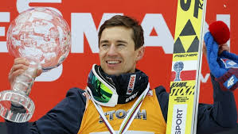
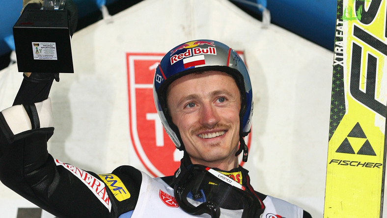
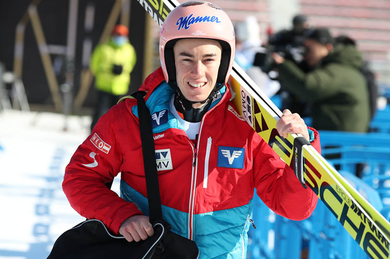

Czym są tak naprawdę skoki narciarskie?
Skoki narciarskie – dyscyplina sportowa rozgrywana na skoczniach narciarskich od połowy XIX wieku. Skoki narciarskie wraz z biegami narciarskimi oraz kombinacją norweską (połączenie biegów i skoków) należą do rodziny sportów narciarstwa klasycznego. Dyscyplina ta cieszy się popularnością głównie w Europie, szczególnie w krajach nordyckich (w Norwegii , Finlandiii Szwecji) i Europy Środkowej (w Austrii, Czechach, Niemczech, Polsce, Słowenii i Szwajcarii), a poza Europą dyscyplina ta jest popularna głównie w Japonii. Celem jest wykonanie jak najdłuższego skoku po rozpędzeniu się i odbiciu od progu skoczni. Na największych skoczniach, tzw.mamucich, możliwe są skoki przekraczające 250 metrów (konkurencję tę nazywa się wtedy lotami narciarskimi). Ocenia się odległość uzyskaną przez zawodnika oraz styl skoku.
Informacje o wybranych skoczkach
| Imię i Nazwisko | Zdjęcie | Wiek | Ilość zwycięstw |
|---|---|---|---|
| Kamil Stoch |  | 32 | 35 |
| Adam Małysz (zakończył karierę w 2011 roku) |
 | 42 | 39 |
| Stefan Kraft |  | 26 | 17 |
Najbardziej znane turnieje skoków narciarskich
- Turniej Czterech Skoczni
- Mistrzostwa Świata w lotach narciarskich
- Willingen Five
Wybrane Rekordy
Największa ilośc zwycięstw: Gregor Schlierenzauer - 53 zwycięstwa
Najdłuższy skok/lot: Stefan Kraft - 254,5m
Najstraszy skoczek: Noriaki Kasai - 48 lat
Najwięcej razy na podium w konkursach PŚ: Janne Ahonen - 108 razy
Najwięcej razy na podium PŚ w roku kalendarzowym: Adam Małysz - 22 razy
A teraz coś dla odważnych. Poniżej napisane jest imie jednego ze skoczków czy potrafisz rozszyfrować ?
Jewgienij
Najbliższy konkurs Pucharu ŚWiata odbędzie się 29.02.2020 o godz. w TVP 1